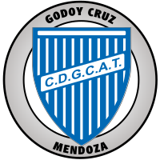

CLUB DEPORTIVO GODOY CRUZ ANTONIO TOMBA
Fundado el 1 de junio de 1921.
Secretaría y estadio: Balcarce 477 - (5501) Godoy Cruz (Mendoza)
Tel. y Fax: 0261-4245144/4240549
E-mail: secretariaclub@clubgodoycruz.com.ar
E- mail FÚTBOL profesional: secretariafutbolprofesional@clubgodoycruz.com.ar
Presidente: Sr. Arnaldo Alejandro Chapini